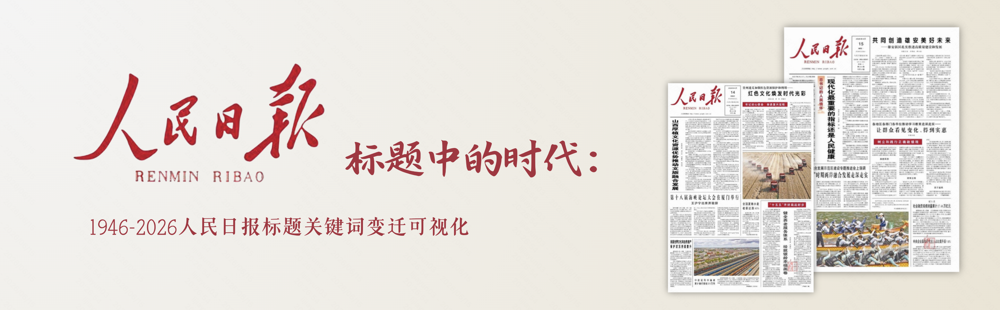

Temporal Control
改革开放初期
1978—1991
阶段关键词词云
词的大小表示该阶段中的示意权重。点击词云中的词，会联动趋势图、共现网络和标题卡片。
阶段 Top 关键词
用柱状图补充词云，让“被点亮”的关键词更像可比较的统计结果。
多关键词趋势折线图
选择一个预设词组，比较不同词汇在历史节点前后的变化。
Trend View
改革
当前阶段权重88示意值
Interpretive Note
关键词共现网络
中心词与阶段共现词之间形成关系网络；点击节点可切换中心词。
标题档案：回到具体文本
趋势图和网络图只是问题线索，标题卡片用于提醒研究者回到文本现场。
数据获取日期 + 标题是最小字段。
历史分期时间条把标题放回阶段。
关键词提取词云与柱状图展示阶段特征词。
时间序列折线图观察上升、下降与转折。
共现分析网络图观察词与词的关系。
文本回读标题卡片回到具体语境。
人文解释从模式重新回到历史问题。